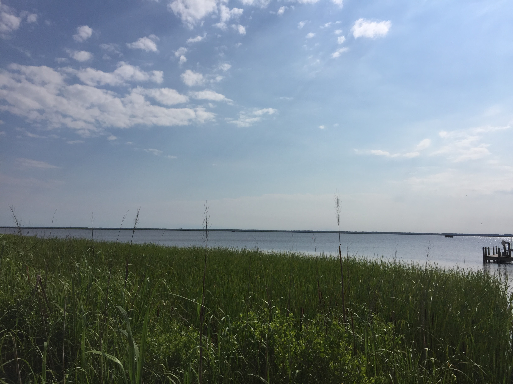
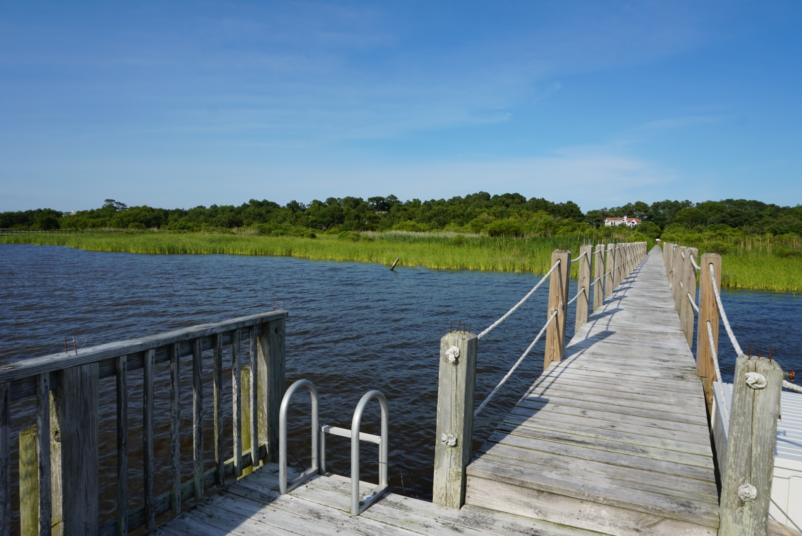

At Sound's Great, you have private access to our dock, which is located directly on the Currituck Sound. After a short walk down over the pond and through the natural wildlife, you emerge to a beautiful view of the Sound and our prive dock. It is a great place to watch the sunset, get some sun or to enjoy the beautiful views of the Sound.
 